Pittsburgh Travel Guide
Hilly riverfront city shaped by heavy industry, higher education, and distinctive neighborhoods connected by bridges, tunnels, and historic infrastructure.
Top Locations
Places to See in Pittsburgh
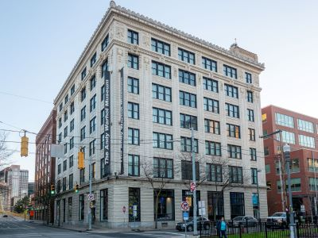
Des Moines Guy, CC BY-SA 3.0, via Wikimedia Commons; Image Size Adjusted

Andy Warhol Museum
Museum dedicated to the life and work of a leading figure in the pop art movement, featuring extensive collections of art, film, and archives.
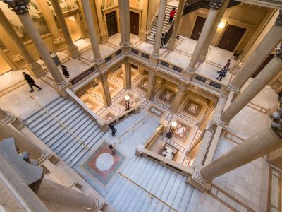
Danksergeant15, CC BY-SA 4.0, via Wikimedia Commons; Image Size Adjusted

Carnegie Museum of Art
Historic art institution housing expansive galleries of fine arts, contemporary works, and internationally renowned exhibitions that explore creativity across centuries and cultures.
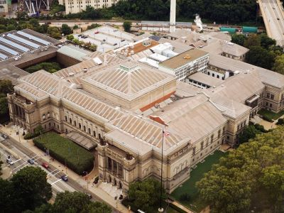
Dsmspence, CC BY-SA 3.0, via Wikimedia Commons; Image Size Adjusted

Carnegie Museum of Natural History
Expansive natural science museum featuring world-class dinosaur fossils, immersive habitat dioramas, and interactive exhibits that explore Earth’s history, biodiversity, and scientific discovery.
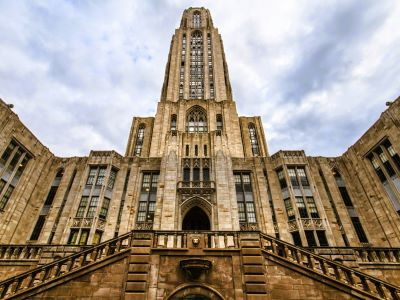
Jeff P from Berkeley, CA, USA, CC BY 2.0, via Wikimedia Commons; Image Size Adjusted
.jpg){kind=link}
Cathedral of Learning
Iconic collegiate Gothic skyscraper featuring a soaring cathedral-like interior, specialized Nationality Rooms, and panoramic city views from its upper floors.
Kevin Burkett from Philadelphia, Pa., USA, CC BY-SA 2.0, via Wikimedia Commons; Image Size Adjusted

Color Park
Vibrant riverside space transformed into a public art installation with colorful murals and graffiti.
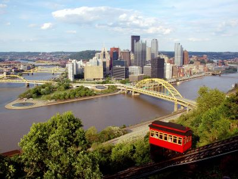
Jeff P from Berkeley, CA, USA, CC BY 2.0, via Wikimedia Commons; Image Size Adjusted
Duquesne Incline
Historic funicular railway offering scenic rides up Mount Washington with panoramic views of Pittsburgh.
Kevin Burkett from Philadelphia, Pa., USA, CC BY-SA 2.0, via Wikimedia Commons; Image Size Adjusted
Emerald View Park
Expansive urban park offering panoramic views of Pittsburgh’s skyline, wooded trails, and scenic overlooks.
Kevin Burkett from Philadelphia, Pa., USA, CC BY-SA 2.0, via Wikimedia Commons; Image Size Adjusted
Fort Duquesne
Historic site marking the remains of a French fortification central to early colonial conflicts and the founding of Pittsburgh.
Kevin Burkett from Philadelphia, Pa., USA, CC BY-SA 2.0, via Wikimedia Commons; Image Size Adjusted
Fort Pitt Museum
Museum chronicling Pittsburgh’s colonial and Revolutionary War history through exhibits and artifacts.
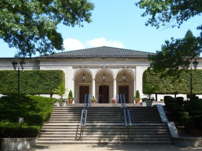
Jeff P from Berkeley, CA, USA, CC BY 2.0, via Wikimedia Commons; Image Size Adjusted
Frick Pittsburgh Museums and Gardens
Historic estate featuring a Victorian mansion, art museum, vintage car collection, greenhouse, café, and landscaped gardens.
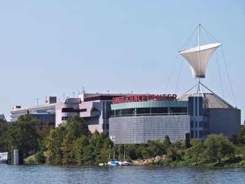
Jeff P from Berkeley, CA, USA, CC BY 2.0, via Wikimedia Commons; Image Size Adjusted
Kamin Science Center
Interactive science center designed for hands-on exploration, immersive learning, and family-friendly discovery through themed exhibits focused on science, technology, and human curiosity.
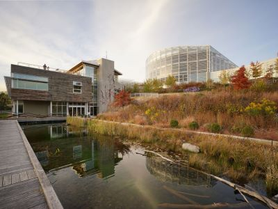
Jeff P from Berkeley, CA, USA, CC BY 2.0, via Wikimedia Commons; Image Size Adjusted
Phipps Conservatory and Botanical Gardens
Victorian-era glass conservatory showcasing themed garden rooms, seasonal floral displays, and sustainable design that celebrates global plant diversity.
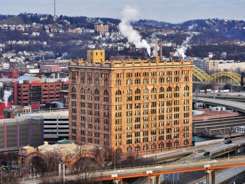
Jeff P from Berkeley, CA, USA, CC BY 2.0, via Wikimedia Commons; Image Size Adjusted
Pittsburgh Union Station
Grand Beaux-Arts railway terminal transformed into a landmark complex featuring monumental architecture, historic interiors, and adaptive reuse spaces that honor early twentieth-century travel.
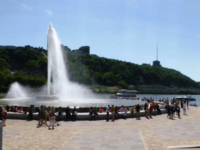
Jeff P from Berkeley, CA, USA, CC BY 2.0, via Wikimedia Commons; Image Size Adjusted
Point State Park
Urban state park offering green space, riverfront trails, and historical landmarks at the confluence of Pittsburgh’s three rivers.
Kevin Burkett from Philadelphia, Pa., USA, CC BY-SA 2.0, via Wikimedia Commons; Image Size Adjusted
Point State Park Fountain
Iconic circular fountain at the tip of Pittsburgh’s Golden Triangle where three rivers meet, symbolizing the city’s historic confluence.
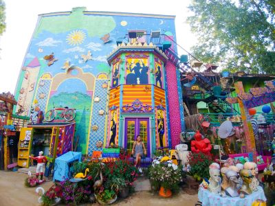
Jeff P from Berkeley, CA, USA, CC BY 2.0, via Wikimedia Commons; Image Size Adjusted
Randyland
Vibrant outdoor art installation and community space filled with colorful murals, found-object sculptures, and eclectic decorations.
Kevin Burkett from Philadelphia, Pa., USA, CC BY-SA 2.0, via Wikimedia Commons; Image Size Adjusted
Senator John Heinz History Center
History museum featuring immersive exhibits, artifacts, archives, and educational programs that explore regional innovation, industry, sports, culture, and community heritage.
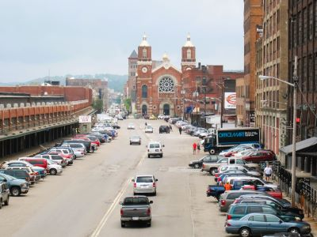
Jeff P from Berkeley, CA, USA, CC BY 2.0, via Wikimedia Commons; Image Size Adjusted
Strip District
Historic riverfront market district featuring ethnic food markets, specialty shops, museums, breweries, restaurants, street vendors, and cultural attractions that showcase Pittsburgh's industrial and immigrant heritage.
Overview
Pittsburgh is the second-largest city in Pennsylvania, with about 300,000 residents, in the hills of western Pennsylvania where the Allegheny and Monongahela rivers meet to form the Ohio River. It is famous as the "Steel City," a former center of American steel production that has reinvented itself around health care, education, robotics and technology, and as the "City of Bridges," with more than 400 bridges. It is also known for its inclines, its neighborhoods, the Steelers, and its sandwiches and pierogies.
People come to Pittsburgh to ride the inclines up Mount Washington for the view of the skyline and the Golden Triangle, visit its excellent museums, walk the riverfronts, cheer for the Steelers, Pirates or Penguins and eat in the Strip District. It is a surprising and affordable city, with historic neighborhoods, a strong arts scene and easy access to Fallingwater and the Laurel Highlands.
History
The "Forks of the Ohio" was a strategic spot, and the French built Fort Duquesne here in 1754 after a young George Washington warned them to leave the Ohio country. The British took it in 1758 and built Fort Pitt, and the city grew around it. In the 19th century, canals, railroads and coal, glass and iron mills made Pittsburgh an industrial center, and in the late 1800s Andrew Carnegie, Henry Clay Frick and the Mellon family built great fortunes in steel and banking. By the early 20th century Pittsburgh produced much of the nation's steel. After steel collapsed in the 1970s and 1980s, the city turned to universities such as Carnegie Mellon and the University of Pittsburgh, medicine and technology. The city is also associated with the artist Andy Warhol, who was born here, and with Fred Rogers, whose television neighborhood was produced here.
Sightseeing and Popular Landmarks
Point State Park is at the tip of the Golden Triangle, with a large fountain and the Fort Pitt Museum and the site of Fort Duquesne. The Duquesne Incline, from 1877, climbs Mount Washington for the classic view of the city. The Cathedral of Learning, a 535-foot Gothic skyscraper at the University of Pittsburgh, has the Nationality Rooms. The Strip District is a market district with food, shops and the famous Primanti Bros. sandwiches. Other sights are Union Station, Randyland and Color Park.
Culture and Museums
The Andy Warhol Museum is the largest museum in North America dedicated to a single artist. The Carnegie Museum of Art and Carnegie Museum of Natural History, with its dinosaur hall, are in Oakland. The Senator John Heinz History Center tells the story of western Pennsylvania, the Kamin Science Center is a hands-on science museum, and Frick Pittsburgh preserves a Gilded Age estate. The Cultural District downtown has theaters for the Pittsburgh Symphony, the Opera and the Pittsburgh Cultural Trust, and Pittsburgh's food scene combines pierogies, sandwiches stuffed with french fries and a growing number of acclaimed restaurants.
Parks
Phipps Conservatory and Botanical Gardens, from 1893, is a Victorian glasshouse and one of the greenest buildings in the country. Schenley Park, Frick Park and Highland Park are large city parks with trails, golf and a zoo. Emerald View Park circles Mount Washington and the hillsides, and the riverfront trails along the Allegheny and Monongahela rivers connect to the Great Allegheny Passage, a 150-mile rail trail to Cumberland, Maryland, that starts near Point State Park. Point State Park is a good place to relax and watch the rivers.
Sports
Pittsburgh has three major league teams. The Pittsburgh Steelers (NFL) have won six Super Bowls, the most of any team along with the Patriots, and play at Acrisure Stadium. The Pittsburgh Pirates (MLB) have won five World Series and play at PNC Park, which is known for its view of the skyline. The Pittsburgh Penguins (NHL), with stars like Mario Lemieux and Sidney Crosby, won five Stanley Cups and play at PPG Paints Arena. Pittsburgh Riverhounds SC play soccer in the USL, and the University of Pittsburgh Panthers play college football and basketball.
Seasons and Weather
Pittsburgh has a humid continental climate with four seasons and plenty of cloudy days. Summers are warm and humid, with highs in the 80s °F, and winters are cold, with highs in the 30s °F and about 40 inches of snow. Spring and fall are the best seasons, with fall foliage on the hills, and football season brings tailgating and crowds. Because the city is hilly, snow and ice can make steep streets hard to drive, and heavy rain can cause river and creek flooding.
This article uses material from the Wikipedia articles and official tourism pages for Pittsburgh, which are released under the Creative Commons Attribution-Share-Alike License 3.0. Additional information from the City of Pittsburgh, National Park Service, the Carnegie Museums of Pittsburgh, the Andy Warhol Museum, National Weather Service Pittsburgh and the official websites of the attractions and teams mentioned.
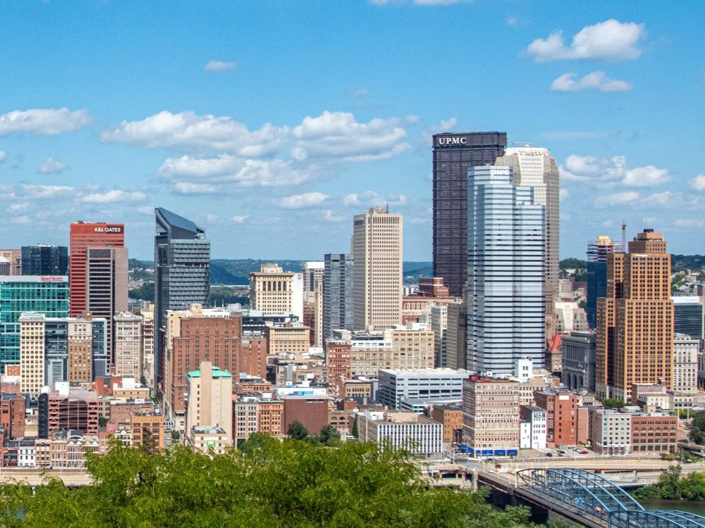
.jpg){kind=link}
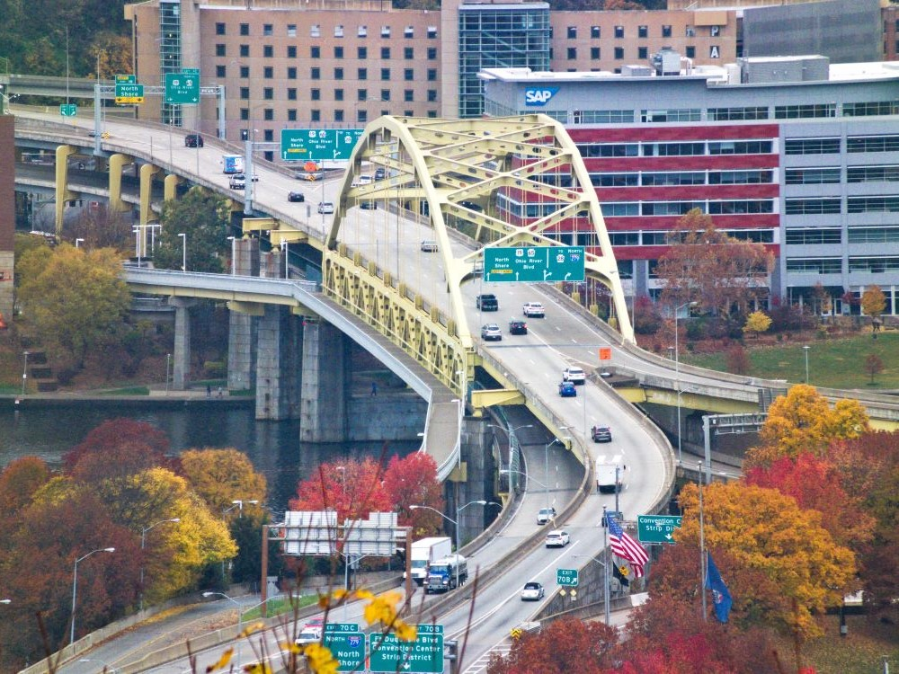

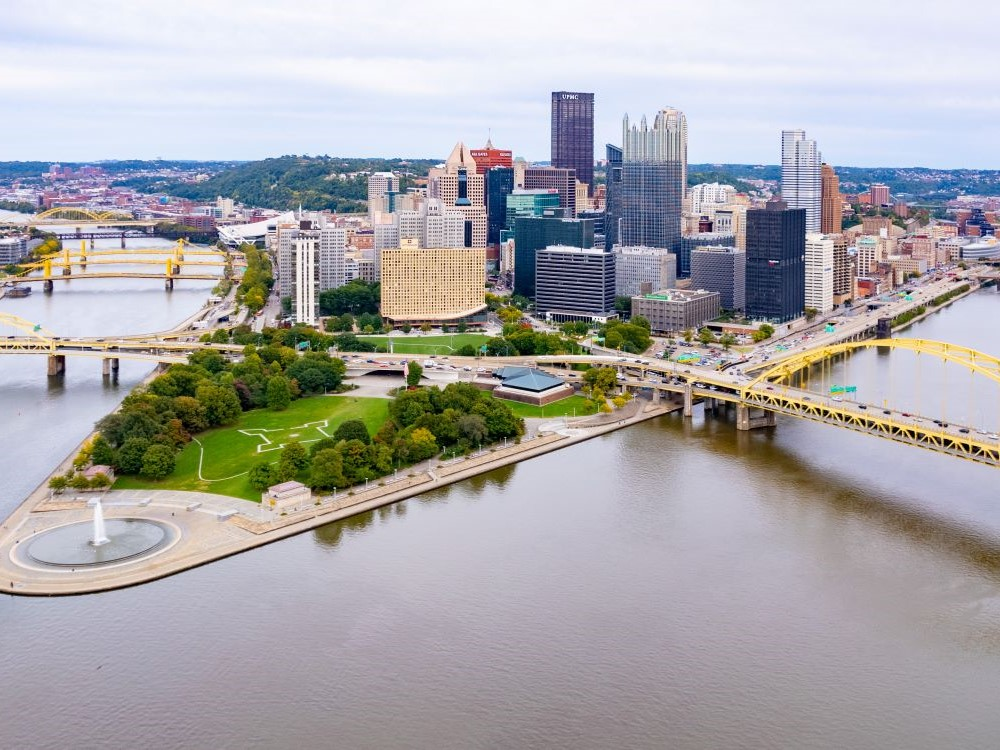
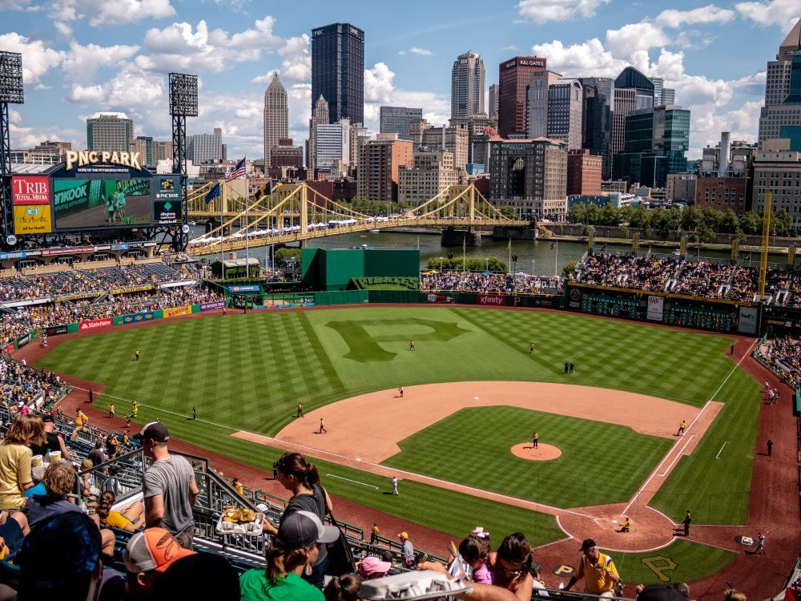
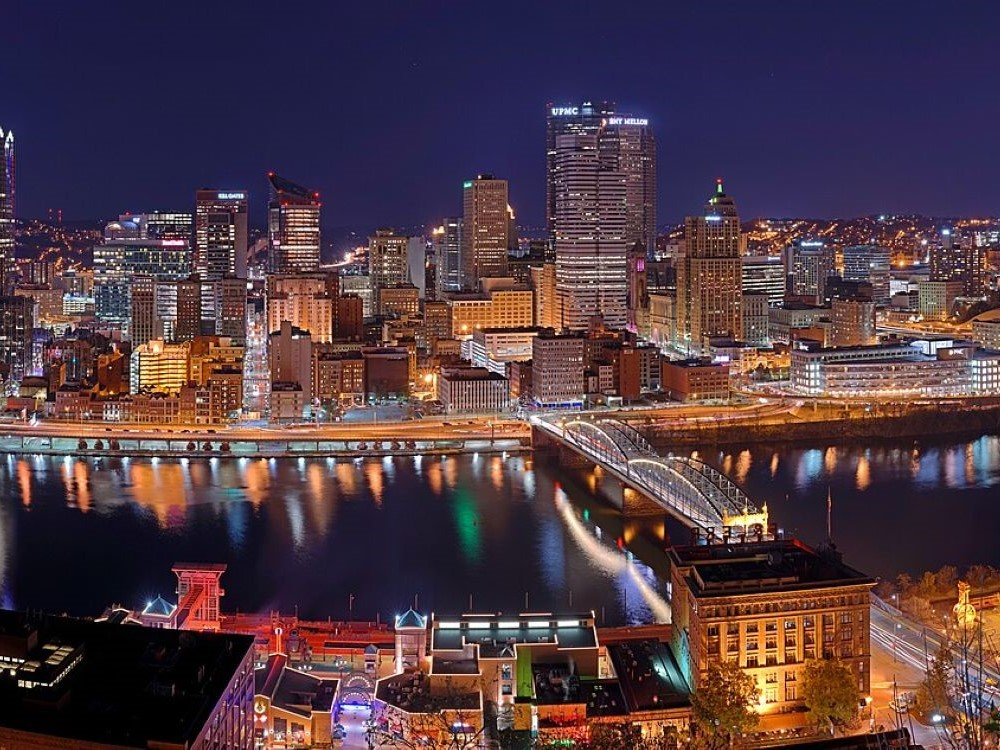
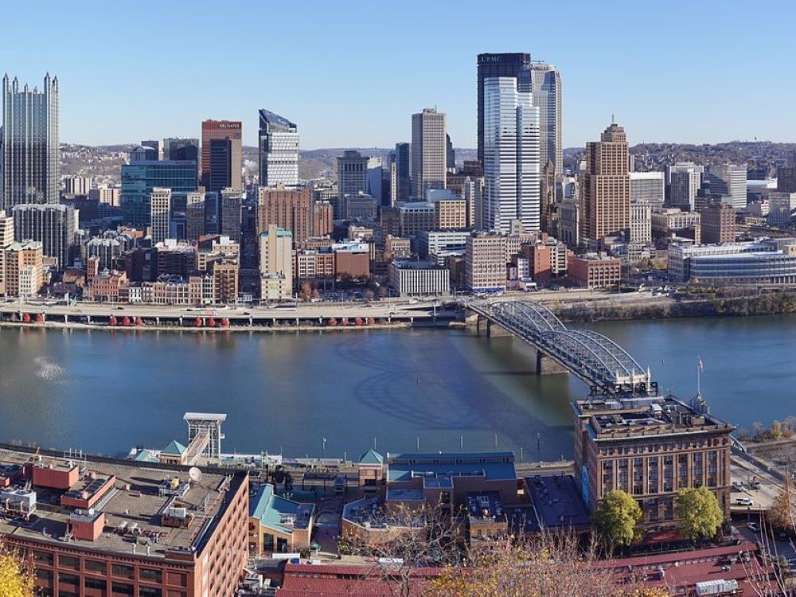